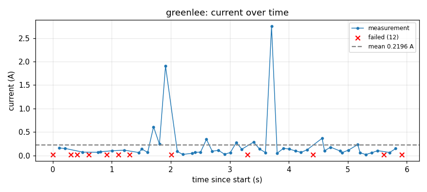
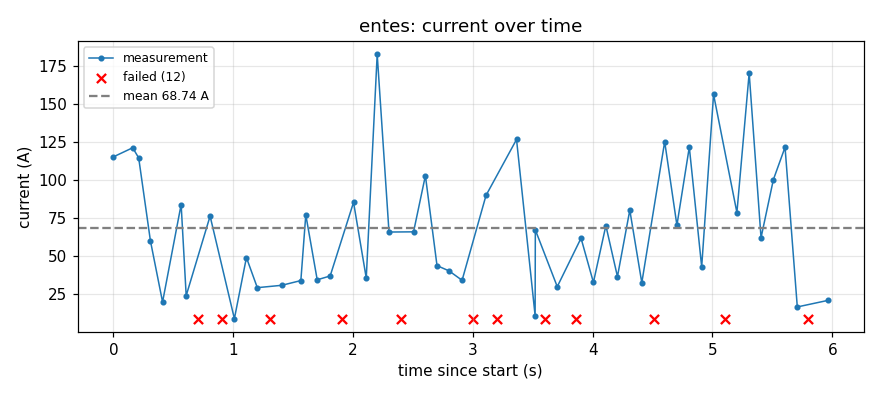
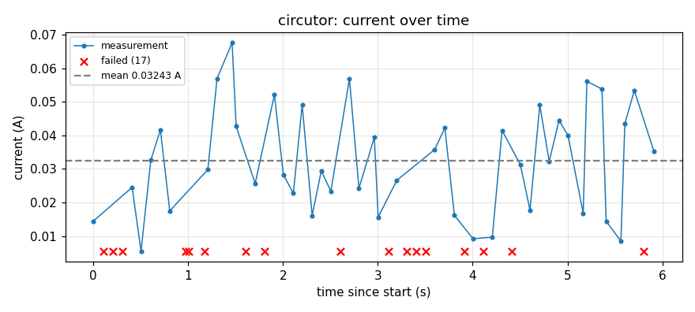
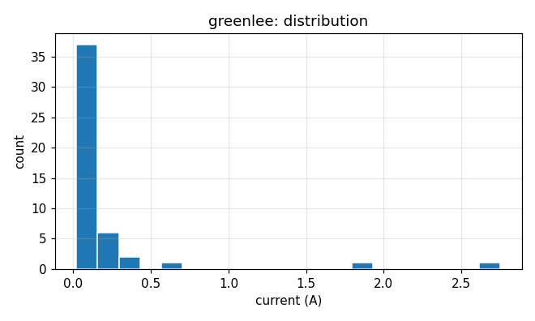
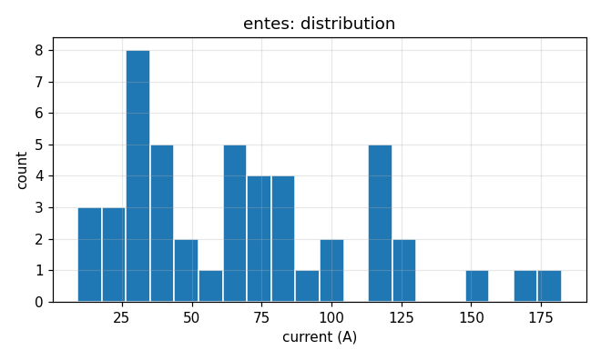
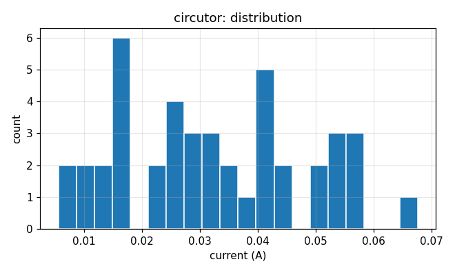
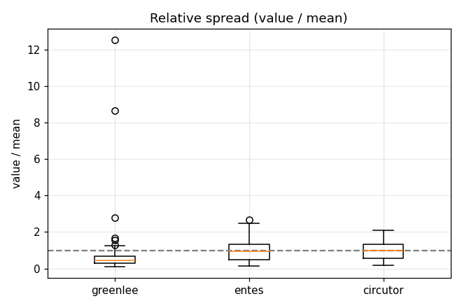

Status: completed_with_errors · started 2026-11-23T10:27:39 ·
finished 2026-11-23T10:27:45
Sampling: 60 measurements @ 10 Hz
· host DV3147-MAC.local · Python 3.12.6
| ammeter | ok/total | err % | mean (A) | median | std | min | max | CV | consistency | achieved Hz | latency ms | z | conforms |
|---|---|---|---|---|---|---|---|---|---|---|---|---|---|
| greenlee | 48/60 | 20 | 0.2196 | 0.09947 | 0.4651 | 0.01992 | 2.752 | 2.117 | variable | 9.983 | 17.83 | -0.59 | yes |
| entes | 48/60 | 20 | 68.74 | 64.01 | 42.78 | 9.074 | 182.4 | 0.6224 | moderate | 9.895 | 20.5 | -0.00202 | yes |
| circutor | 43/60 | 28.3 | 0.03243 | 0.03128 | 0.01583 | 0.005522 | 0.06764 | 0.4882 | moderate | 9.982 | 20.84 | 0.944 | yes |
rank by availability, then conformance to expected mean, then coefficient of variation
| rank | ammeter | availability | CV | CV vs best | z | conforms |
|---|---|---|---|---|---|---|
| 1 | entes | 80% | 0.6224 | 1.27 | -0.00202 | yes |
| 2 | greenlee | 80% | 2.117 | 4.34 | -0.59 | yes |
| 3 | circutor | 72% | 0.4882 | 1 | 0.944 | yes |
Most reliable: entes






